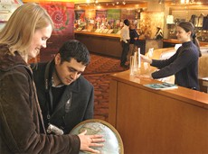

|
Penser mondialement : comment faire comprendre l’interdépendance économique des nations (huit leçons pour les professeurs d'économie d'établissements secondaires) En partenariat avec le National Council on Economic Education des États-Unis (NCEE), le Centre du FMI lance à l’intention des élèves du secondaire un programme d’enseignement sur les effets de la mondialisation et l’importance de bien comprendre les rouages de l’économie mondiale. Le programme Penser mondialement : comment faire comprendre l’interdépendance économique des nations compte huit leçons, testées en classe, portant sur différents concepts comme la mondialisation, les avantages comparatifs, la croissance économique, les taux de change et d’autres sujets liés à l’économie internationale. |
|

Le Centre d'Accueil du FMI |
Le Centre d'Accueil du FMI a pour mission de sensibiliser le public au rôle de l'institution l'économie internationale à l'ère de la mondialisation et à la manière dont elle rend service à ses 184 pays membres.
Il présente des expositions permanentes et spéciales, ainsi que des documentaires sur vidéodisque numérique (DVD). Il accueille également des colloques économiques et des forums du livre, ainsi que les séances de présentation du FMI animées par des membres de ses services et la Visite guidée (Walking Tour).